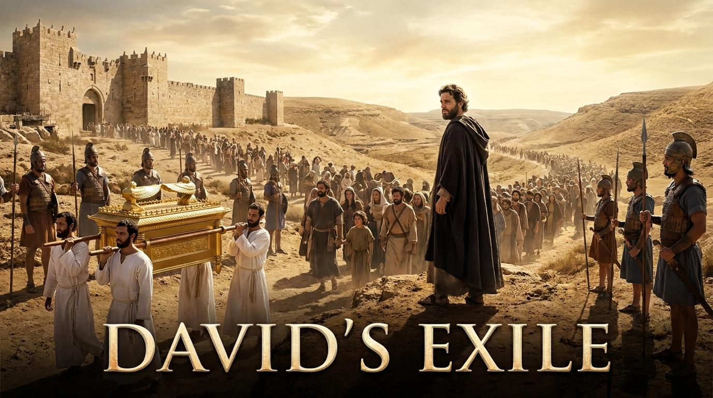

啟程的禱告
主啊，當我們人生的道路遇見背叛、危機與曠野時，求祢賜給我們如以太般堅定的忠誠，不計代價地跟隨祢；也求祢賜下如大衛般謙卑降服的心，不將祢的同在當作掌控環境的籌碼。幫助我們在黑暗與未知中，依然能放手將生命的主權交還給祢，深信祢的意旨盡都美好。奉主耶穌基督的名求，阿們。
信息大綱
一
真實的跟隨：患難中的不離不棄
關鍵原文解析
慈愛 (חֶסֶד - hesed) 與 誠實 (אֱמֶת - emet)：大衛在落難中，將上帝最核心的兩個屬性祝福在一個外邦人身上，顯示出他即使在危機中，依然擁有寬闊與愛人的心。
關鍵問題與解析
Q: 在順境中跟隨很容易，逆境時呢？ 以太展現了超越利益的「盟約之愛」。這挑戰我們檢視信仰動機：我們跟隨主，是為了今生的好處，還是出於對祂全然的愛？
經典例證
「二次大戰期間，潘霍華毅然決然搭船返回德國參與抵抗運動。這正是一種『無論生死，王在哪裡，僕人也必在哪裡』的真實跟隨。」
當基督呼召一個人時，祂是吩咐他來死。
— 潘霍華 (Dietrich Bonhoeffer)二
放下主權的降服：拒絕挾持上帝
關鍵原文解析
蒙恩 (חֵן - chen)：意為恩惠、喜悅。大衛不依靠約櫃這個「宗教聖物」來保障勝利，而是完全仰望上帝的恩惠。得救不在乎儀式，乃在乎神的主權。
關鍵問題與解析
Q: 我們是否利用屬靈象徵來「挾持」神？ 大衛拒絕把神當作護身符。他把約櫃送回，表示他寧願失去王位，也不願越過神的主權。真正的信仰是讓神作神。
現代見證
「一位牧者在面臨人事危機時辭去職位，他說：『如果這間教會是神的，祂會自己保守；如果這只是我的事業，那就讓它倒去吧。』這就是送回約櫃的降服。」
如果你把任何事物看得比神更重要，那它就是你的偶像。
— 提摩太·凱勒 (Timothy Keller)三
靈巧的信靠：在黑暗中安息於神
關鍵原文解析
先見 (רֹאֶה - ro'eh)：字根有「觀察」之意。大衛賦予祭司戰略任務。這顯示大衛在交託主權的同時，仍盡上人的本分與智慧。
關鍵問題與解析
Q: 如何平衡「信靠」與「盡本分」？ 信靠不等於消極。真正的信靠是在神所允許的範圍內盡力而為，然後將結果安息在神的手中。
智慧比喻
「遇到暴風雨的水手必須用盡一切知識來掌穩船舵，同時在內心深處明白，最終決定生死的是掌管風浪的上帝。」
當你看不見神的手時，請相信祂的心。
— 司布真 (Charles Spurgeon)講章全文
各位弟兄姊妹，平安。當我們讀到撒母耳記下15章時，我們看見了以色列歷史上最令人心碎的場景之一。大衛，這位偉大的君王，正被迫逃離他深愛的耶路撒冷。背叛他的不是外敵，而是他的親生兒子押沙龍。這是一條充滿眼淚、羞辱與未知的曠野之路。然而，正是在這個人生最黑暗的時刻，大衛的屬靈生命綻放出最美麗的光芒。今天，我們要透過這段經文，一起來學習「在曠野路上的降服與跟隨」。
第一，我們看見真實的跟隨：患難中的不離不棄。
當大衛落難時，跟隨他的人並不多，但其中有一位外邦將領引起了我們的注意，他就是迦特人以太。大衛出於體恤，勸這位剛來投靠的外邦人回去，不要跟著自己受苦。但以太堅定地起誓：「無論生死，王在哪裡，僕人也必在哪裡。」這句話深深地震撼了我們。在順境中跟隨很容易，當大衛在王座上時，人人都想沾光；但現在大衛正在逃亡，跟隨他意味著失去一切，甚至喪命。以太展現了什麼是真正的忠誠。
第二，我們看見放下主權的降服：拒絕挾持上帝。
當大衛走到汲淪溪畔時，祭司撒督抬著神的約櫃來了。大衛做了一個極其反常、卻極度屬靈的決定：「你將神的約櫃抬進城去。我若在耶和華眼前蒙恩...倘若祂說：『我不喜悅你』，看哪，我在這裡，願祂憑自己的意旨待我！」這是何等深沉的降服！大衛拒絕把上帝當作護身符，他拒絕挾持上帝。真正的信仰，是把約櫃送回去，讓神作神，完全降服在祂的主權之下。
第三，我們看見靈巧的信靠：在黑暗中安息於神。
大衛雖然交出了約櫃，把自己交給神，但他並沒有消極地躺在曠野裡等死。他立刻對撒督說：「你不是先見嗎？你回城裡去，在曠野的渡口等著，把你觀察到的情報送來給我。」這告訴我們一個重要的屬靈真理：信靠神的主權，與盡上人的本分，兩者從來都不衝突。在風暴中，我們不能只是閉上眼睛禱告，我們還必須去掌舵、去拉帆。
讓我們學習以太的忠誠，學習大衛的降服，承認神的主權。願神祝福我們！

講道應用方向
- 01. 檢視動機 當信仰不再帶來舒適時，我還能跟隨嗎？
- 02. 辨識偶像 找出那些你試圖用來操控上帝的安全感籌碼。
- 03. 積極交託 在困境中分辨神的主權與我的本分。
回應實踐行動
-
寫下「放手禱告」：將目前最焦慮的人事物具體宣告交還給神。
-
成為別人的「以太」：本週主動陪伴一位正處於人生低谷的弟兄姊妹。
-
採取智慧行動：針對難題，執行一個「現在立刻可以做」的步驟。
名言佳句
「真正的順服，就是在我們不明白神為什麼這樣做的時候，依然選擇信靠祂。」
— 查爾斯·史丹利「我們所渴望的，不應是上帝的恩賜，而是上帝自己。」
— 陶恕 (A.W. Tozer)「信心不是相信上帝會做你想做的事；信心是相信上帝會做對的事。」
— 畢德生 (Eugene Peterson)「上帝的恩典不代表我們不會經歷苦難，而是代表在苦難中，我們永遠不會被孤立無援。」
— 盧雲 (Henri Nouwen)「神在我們順遂時對我們細語；在我們受苦時對我們大聲呼喊。痛苦是神用來喚醒這個耳聾世界的麥克風。」
— 魯益師 (C.S. Lewis)網路資料可能出錯，請小心查證、謹慎使用。